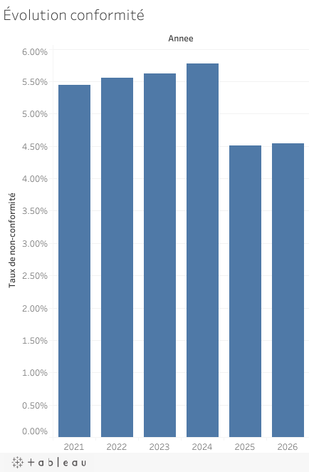
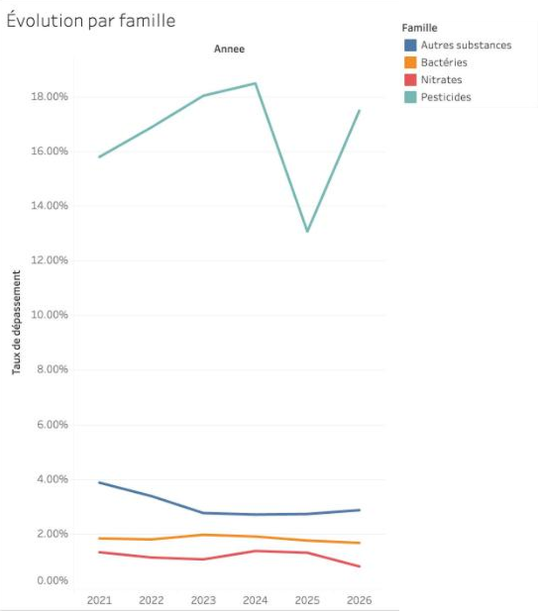
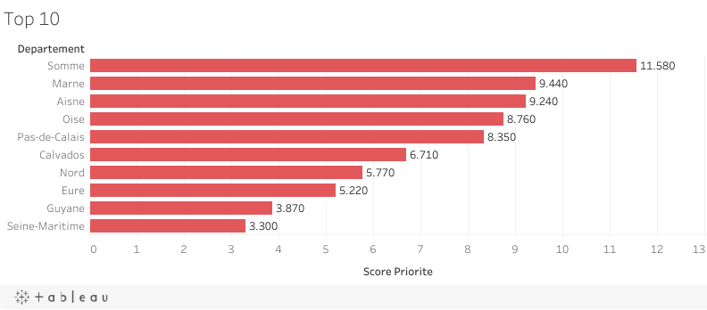
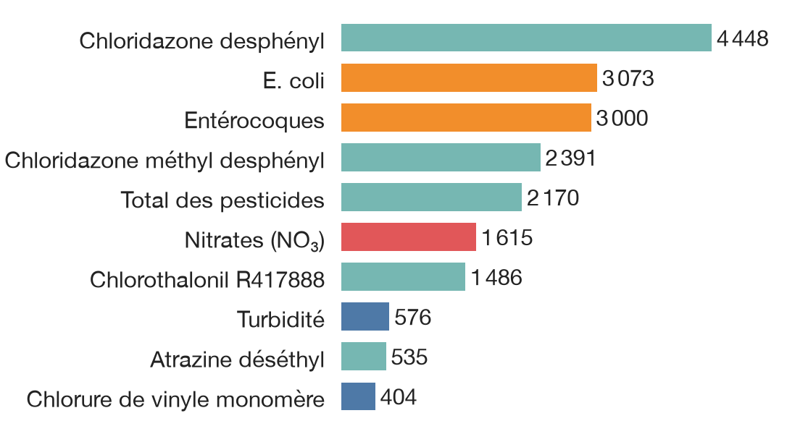
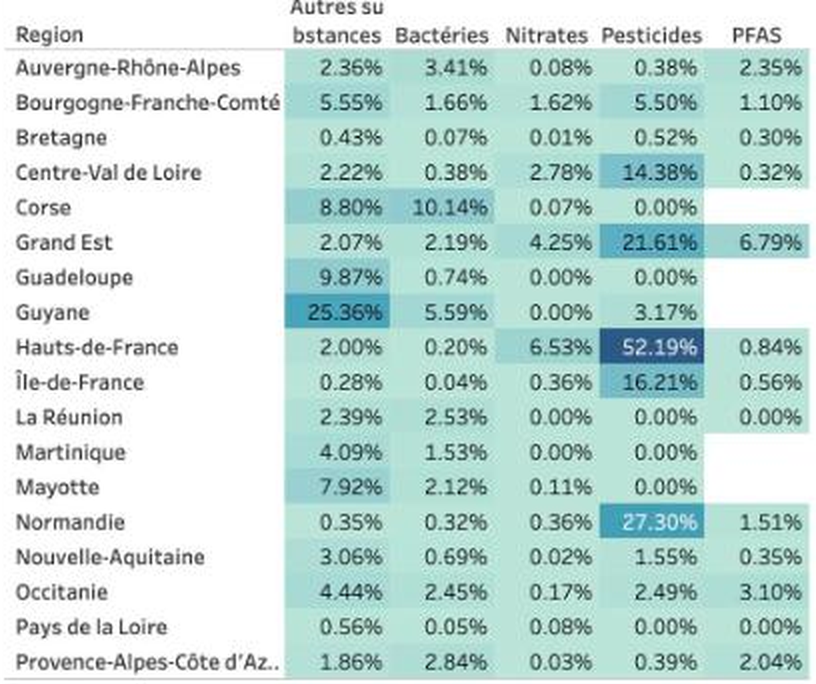
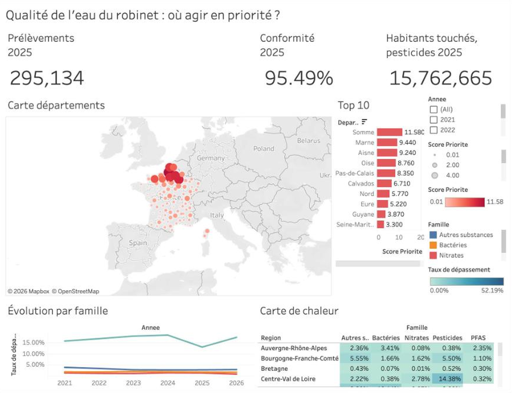
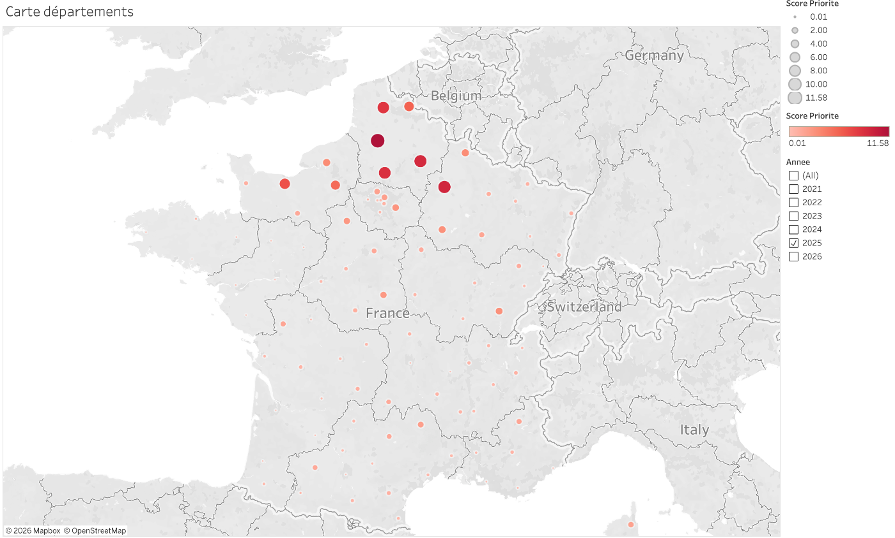
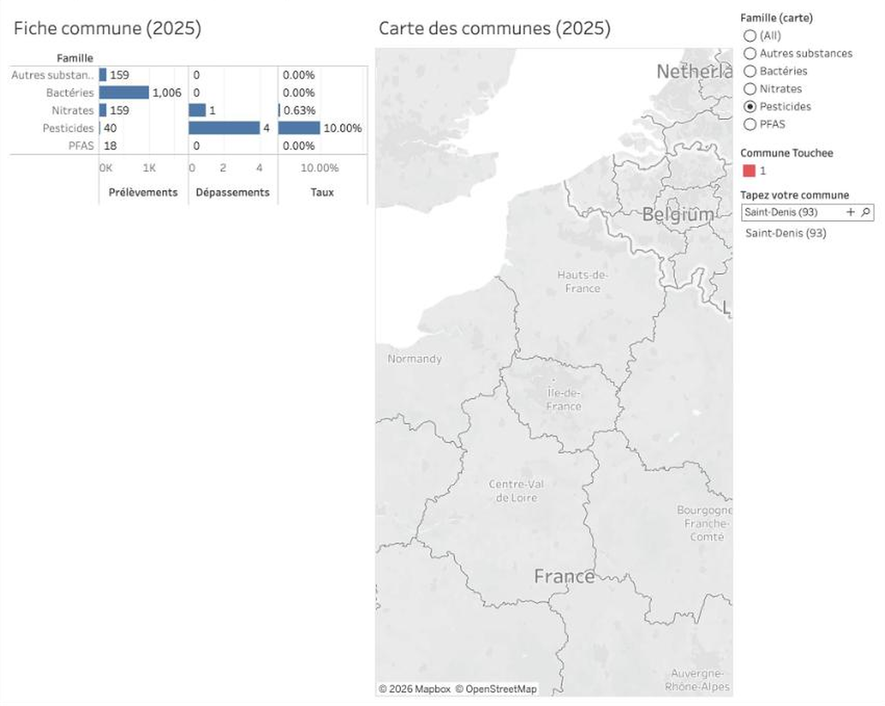

Source : ministère de la Santé, résultats du contrôle sanitaire de l'eau distribuée réalisé par les ARS, publiés commune par commune sur data.gouv.fr. Population et coordonnées : Insee (geo.api.gouv.fr).
Période : 2021 à 2026 (2026 incomplet, janvier à septembre). Volume : ≈ 1,6 million de prélèvements et plusieurs millions d'analyses ; 34 807 communes contrôlées en 2025.
Vocabulaire : un prélèvement est un échantillon d'eau ; une analyse est la mesure d'un paramètre ; une commune touchée a au moins un dépassement de limite dans l'année.
| Fichier | Une ligne = | Sert à |
|---|---|---|
1_communes | commune × famille × année | archive (non utilisé) |
1b_communes_2025 | commune × famille (2025) | carte communes, « Ma commune » |
2_departements | département × famille × année | évolution, carte de chaleur |
3_conformite | département × mois | conformité, chiffres clés |
4_substances | substance × année | top 10 des substances |
5_score | département × année | carte départements, top 10 |
| Utilisateur | Besoin | Tableau de bord |
|---|---|---|
| Décideur (ARS, préfecture) | Comparer, prioriser | « Vue France » |
| Citoyen | Connaître l'eau de sa commune | « Ma commune » |
Des taux, pas des comptes : un grand département a forcément plus de dépassements ; on compare donc des taux et des parts de population.
Chaque risque = part de la population touchée, pondérée par le taux de dépassement de sa commune (%).
| Technique | Utilisation |
|---|---|
| Cartes | Symboles proportionnels ; ≈ 35 000 communes en points |
| Champs calculés | Taux, score pondéré, ZN, IF … THEN |
| LOOKUP | Variation d'une année sur l'autre |
| RANK | Rang de chaque département |
| FIXED | Population d'une commune comptée une seule fois |
| Contexte + Top N | Filtre Année appliqué avant le Top 10 |
| Action de filtre | Clic sur un département → filtre la vue |
| Publication | Tableau Public (lien et QR code au verso) |
« Vue France » (décideur) : chiffres clés, carte, Top 10, courbes, chaleur ; un clic sur un département filtre la vue.
« Ma commune » (citoyen) : on tape sa commune, on voit ses résultats par famille.





| # | Action | Où |
|---|---|---|
| 1 | Traiter les métabolites de pesticides (charbon actif, interconnexion, dilution) | Somme, Marne, Aisne, Oise, Pas-de-Calais |
| 2 | Protéger les captages (aires d'alimentation, moins d'intrants) | Hauts-de-France, Normandie, Grand Est |
| 3 | Renforcer la surveillance des PFAS et informer | Grand Est, Occitanie, Auvergne-Rhône-Alpes |
| 4 | Améliorer le traitement bactériologique des petits réseaux | Corse, Guyane, petites communes |
| 5 | Informer les citoyens avec l'outil « Ma commune » | Partout |


| Temps | Partie et ce qu'on dit |
|---|---|
| 0:00 | Accroche : « Savez-vous ce qu'il y a dans l'eau que vous avez bue ce matin ? » |
| 0:30 | Problématique : où l'eau dépasse-t-elle les limites ? Où l'ARS doit-elle agir en premier ? |
| 1:30 | Données : source officielle, 1,6 M de prélèvements, 5 familles, 6 fichiers. |
| 3:00 | Méthode : des taux plutôt que des comptes ; le score pondéré et ses poids. |
| 4:30 | Démo « Vue France » : chiffres → carte → Top 10 → clic sur la Somme → courbes → chaleur. |
| 7:00 | Démo « Ma commune » : taper une commune connue du jury, lire la fiche. |
| 8:00 | Résultats : les 5 messages clés et les recommandations. |
| 9:00 | Limites : pondération, PFAS récents, 2026 partiel. |
| 9:30 | Conclusion : « L'eau est bonne à 95 %, mais 15,8 millions de personnes vivent dans une commune touchée par les pesticides, surtout dans le Nord. C'est là qu'il faut agir. » |

Q : Pourquoi ces poids dans le score ?
R : Les bactéries rendent malade tout de suite (30 %) ; les risques chroniques comptent 20 % ; « autres » est une famille hétérogène (10 %). C'est un choix discutable.
Q : Pourquoi le filtre Année est-il en contexte ?
R : Sans contexte, Tableau calcule le Top 10 sur toutes les années puis filtre 2025 : le classement serait faux.
Q : À quoi sert le FIXED ?
R : Chaque commune a 5 lignes, une par famille. {FIXED [code_insee] : MAX([population])} prend sa population une seule fois.
Q : Pourquoi les PFAS ne sont-ils pas sur la courbe ?
R : Ils n'étaient presque pas mesurés avant 2025 : la courbe montrerait une fausse évolution.
Q : Un dépassement, c'est dangereux ?
R : Pas forcément : les limites sont des seuils de précaution, et l'ARS évalue ensuite le risque.
Q : Pourquoi les pesticides surtout dans le Nord ?
R : La chloridazone était surtout utilisée sur la betterave. Nos données montrent où, mais ne prouvent pas pourquoi.
Q : Non-conformité ou dépassement : quelle différence ?
R : La non-conformité porte sur tous les prélèvements ; le taux de dépassement est calculé par famille de polluant.
| ARS | Agence régionale de santé, qui organise le contrôle sanitaire |
| Métabolite | Produit de dégradation d'un pesticide |
| PFAS | Substances per- et polyfluoroalkylées, « polluants éternels » |
| Calcul de table | Calcul sur les résultats affichés (RANK, LOOKUP) |
| Expression LOD | Calcul à un niveau de détail fixé (FIXED) |
| Filtre de contexte | Filtre appliqué en premier, avant le Top N |